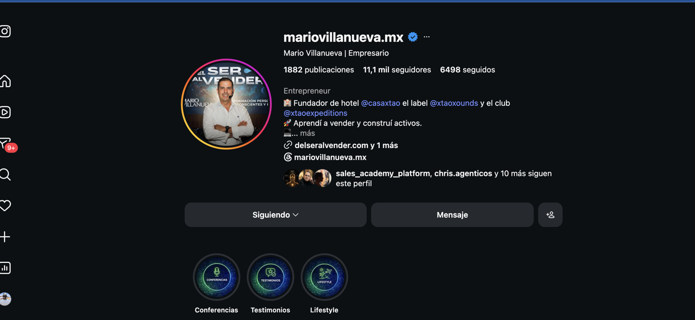
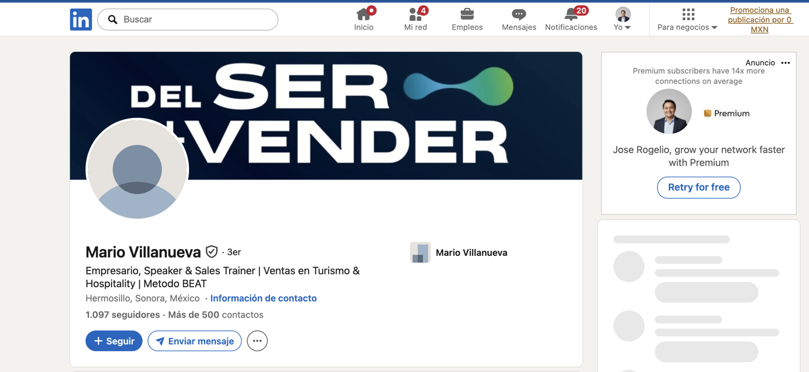
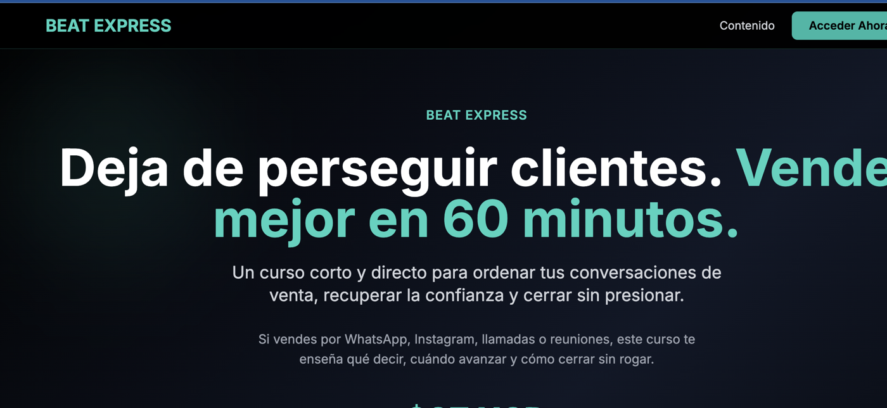
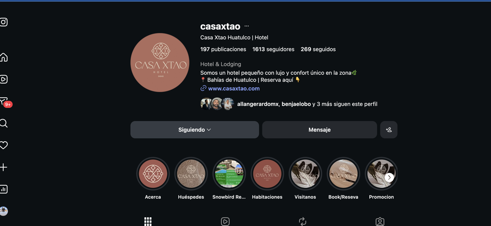
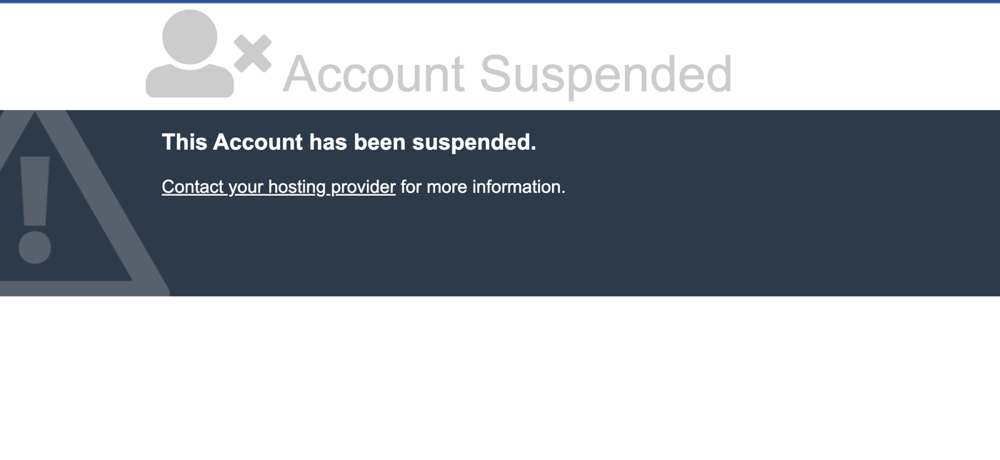
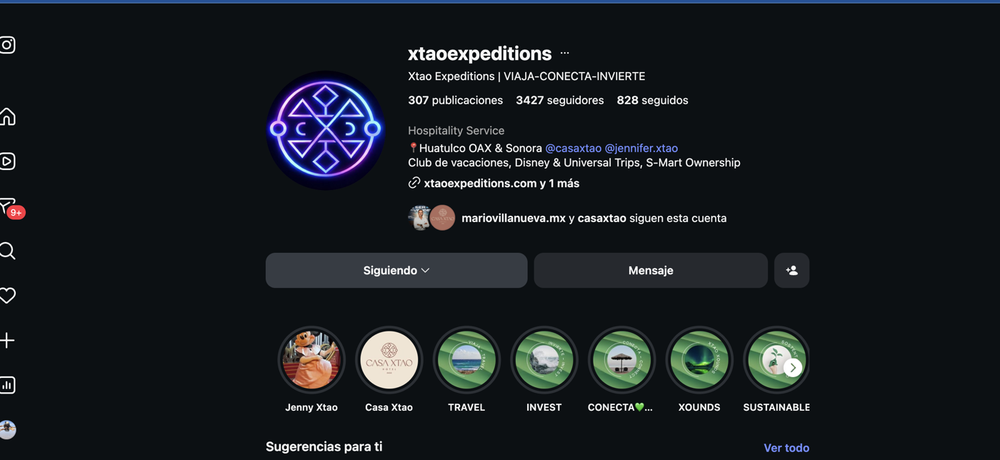
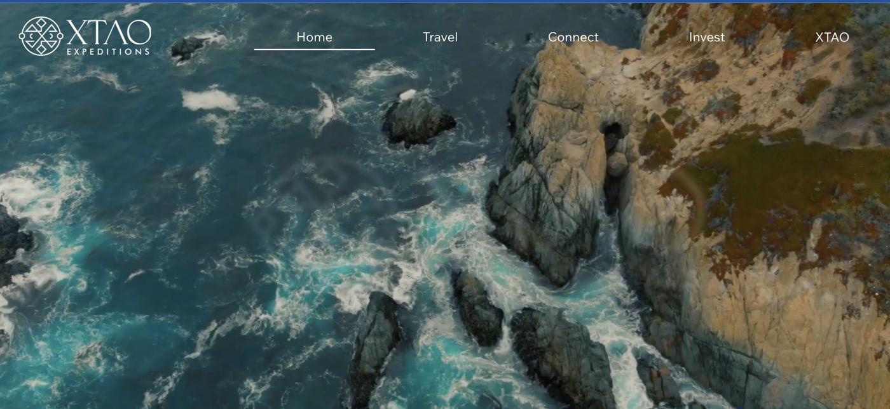

Filosofía propia
La venta deja de ser presión cuando el vendedor se alinea, genera confianza, entiende y guía.
ANÁLISIS DIGITAL · 28 JUL 2026
Del Ser al Vender, el Método BEAT, Casa Xtao y Xtao Expeditions cuentan una historia potente de ventas y ejecución. Hoy esa historia vive fragmentada entre perfiles, productos y dominios.
RESUMEN EJECUTIVO
La venta deja de ser presión cuando el vendedor se alinea, genera confianza, entiende y guía.
BEAT EXPRESS tiene una promesa, duración, temario, precio, acceso y garantía concretos.
Casa Xtao y Xtao Expeditions muestran que Mario opera negocios, no solo enseña teoría.
La bio abre hotel, música, expediciones y formación antes de fijar una sola conversión.
El enlace aparece en el perfil del hotel y actualmente rompe confianza y reservas. Debe recuperarse o sustituirse antes de dirigir tráfico hacia ese activo.
INVENTARIO DE ACTIVOS
Empresario, fundador de proyectos y una frase útil: “Aprendí a vender y construí activos”.
Abrir perfil ↗“Empresario, Speaker & Sales Trainer | Ventas en Turismo & Hospitality | Método BEAT”.
Abrir perfil ↗Cuatro bloques accionables, acceso de por vida y garantía publicada de siete días.
Abrir oferta ↗Hospitalidad, viajes, experiencias y comunidad como prueba de operación en el terreno.
*Dato publicado históricamente por Casa Xtao.Métricas observadas en la fecha de corte; pueden cambiar.
DECISIÓN DE POSICIONAMIENTO
Empresario · Speaker · Sales Trainer
BEAT · Trust · Need · Help · Hurry
60 min · $27 USD
Conversación directa
Hotel · Viajes · Experiencias
Vender mejor no empieza con una frase. Empieza con tu ritmo.
Casa Xtao, Expeditions y Xounds aportan credibilidad; no deben interrumpir el camino hacia BEAT EXPRESS.
Acceder al curso de 60 minutos. Una sola acción, repetida de manera consistente.
Hablar con Mario para equipos y conferencias, sin inventar paquete, precio o disponibilidad.
AUDIENCIA Y EMBUDO
Problema reconocible y reencuadre.
Método, autoridad y oferta.
Primera transformación.
Equipo, conferencia o BEAT PRO verificable.
EVIDENCIA VISUAL
Se recortó la interfaz del navegador para excluir pestañas, favoritos y datos ajenos al análisis.







PLAN DE ACCIÓN
FUENTES
SIGUIENTE PASO